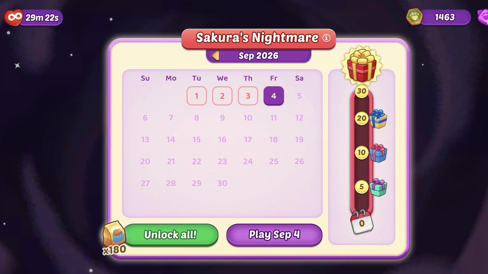
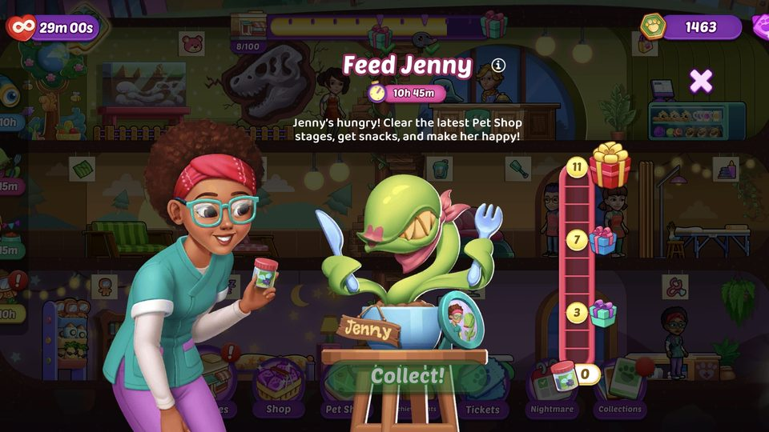
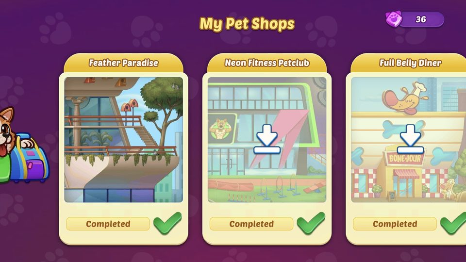
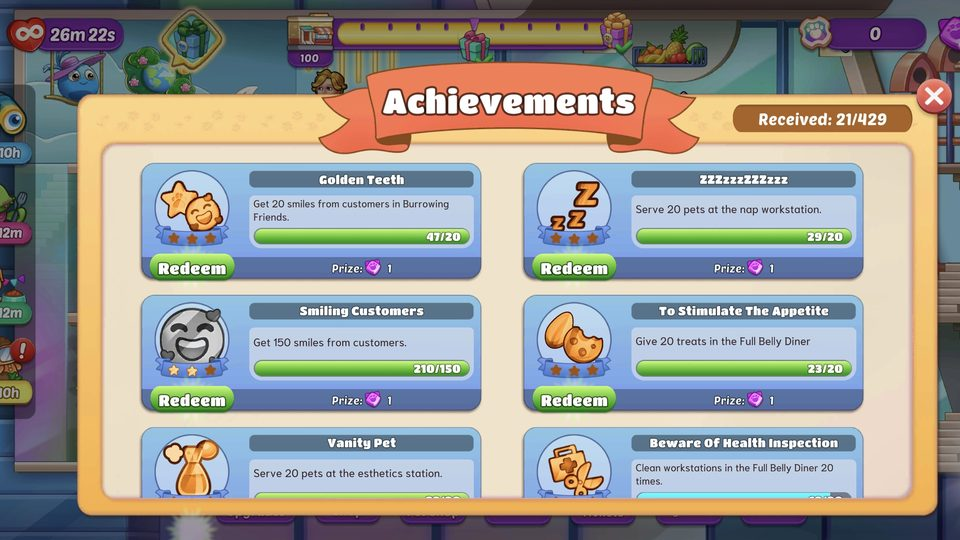
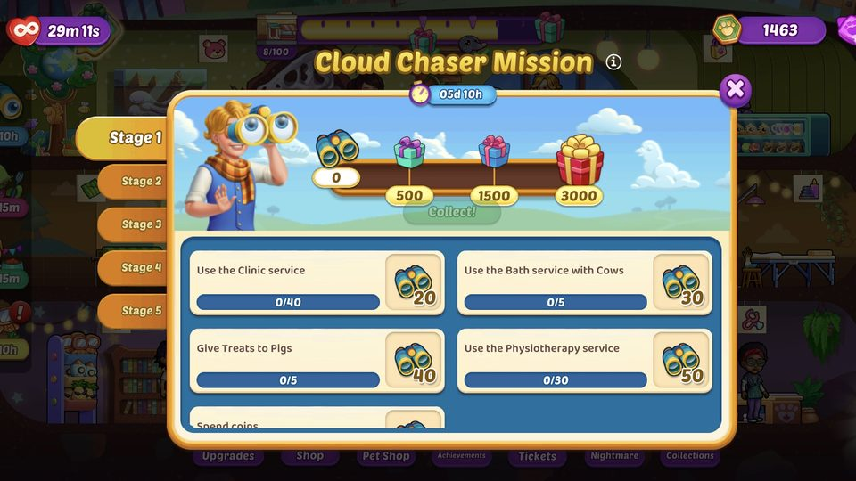
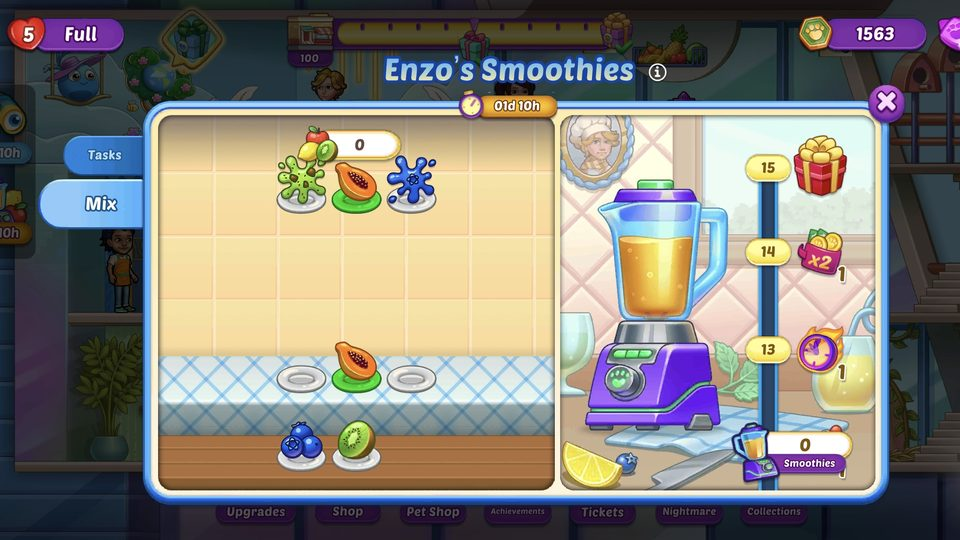
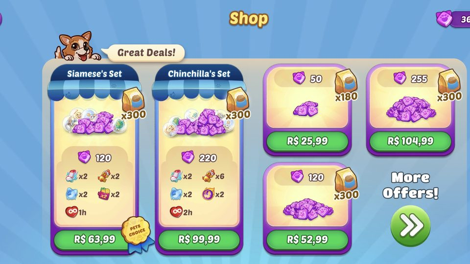
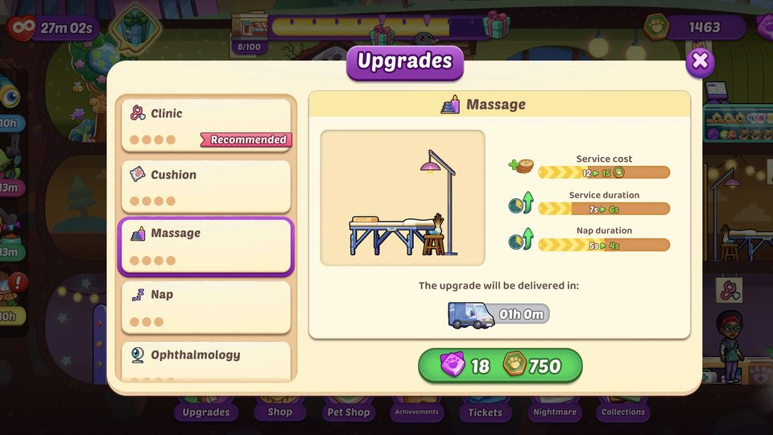
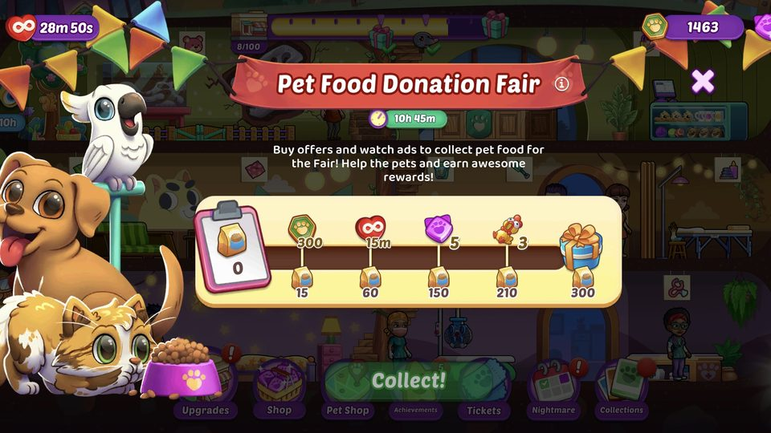

A live time-management game where players run and grow a chain of pet shops across several worlds. I write its narrative — event storylines, in-game text, and the arcs that connect its worlds — and design the features and economy that keep it alive.
Pet Shop Fever is Tapps Games' live time-management title: players run and expand a chain of pet shops across several worlds, caring for animals and serving customers. It has been live for years, so the work is less about inventing a core from scratch and more about keeping a loved game growing — new story, new features, new events — without breaking what already works.
My role spans three things: the game's narrative, the features that carry players between sessions, and the economy that ties them together. Built in Unity, shipped with Scrum, tuned through playtesting and a continuous A/B testing program.
A casual game earns its retention with reasons to come back, and story is one of the strongest. I write the game's voice and its threads.

Events like Sakura's Nightmare and Cloud Chaser Mission ship with their own short storylines, so an event is a small story players want to see through, not just a reward track.

Dialogue, tutorial copy, notifications and event text — a consistent tone across characters, menus and messages.

Narrative arcs that connect the game's worlds, so moving forward feels like progressing through a story rather than unlocking a list.

Sets of collectible items give players a goal that lives between story beats and feeds back into the reward economy.

Short, repeatable objectives that reward daily logins and give the economy a steady, predictable source.

Enzo's Smoothies and Dig, Find, Move! (below) are minigames I designed from rules to feel, working as standalone features and as event content.

Soft and hard currency sources are mapped against their sinks for every world, so a new world never opens with players already in deficit.

Level pacing and win/defeat curves are tuned so challenge stays meaningful and boosters, extra lives and Second Chance have a clear role in play, not just in the store.

The shop and contextual offers are shaped and A/B tested to support the game without making the store feel like a wall.
Two of the minigames I designed, recorded from a development build.